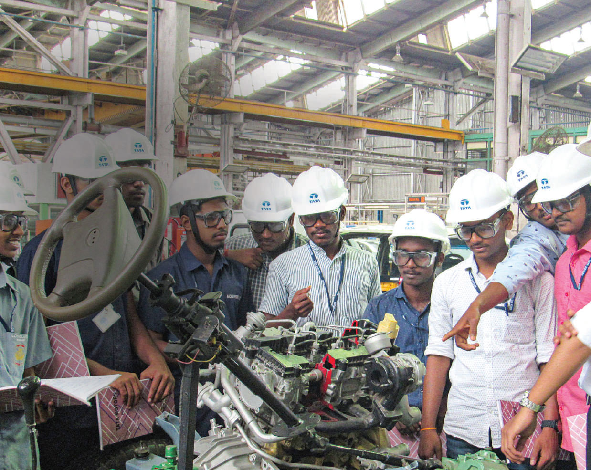

TATA MOTORS
ANNUAL REPORT
2019-2020
Social Responsibility
Social Responsibility
Making collaboration an
imperative for social change
At the Tata Motors Group, we believe that we are an integral part of the society and play a crucial role in providing mobility solutions to our customers, employment avenues to the communities where we operate and better opportunities for the society to prosper.
Value chain
We believe that, to realise the true essence of sustainability, it needs to be integrated not only in our own operations but also across our value chain. We rely on a huge network of suppliers and dealers, and regularly engage with them on a wide range of sustainability issues pertaining to upstream and downstream supply chain activities.
A significant part of our supply chain comprises technology-driven energy-intensive suppliers. Continuous efforts are undertaken to increase energy efficiency, reduce carbon emissions, implement rain water harvesting and utilise more renewable energy.
Tata Motors Limited
SUSTAINABLE SUPPLY CHAIN INITIATIVE
TML's Supplier and Dealer Codes of Conduct ensure ethical and sustainable practices across the value chain. TML has developed vendor parks at new manufacturing locations to ensure logistics emissions reduction and to enhance local employment.TML initiated a systematic and phase-wise implementation of the Sustainable Supply Chain Initiative in FY17. It began by shortlisting its suppliers based on ESG criticality. It then developed sustainability guidelines, conducted capacity building workshops and on-site sustainability assessments of suppliers. Learnings were shared with all the suppliers and they were rewarded and recognised for demonstrating improvement in sustainability performance. As part of the initiative, TML covered a cumulative of 358 suppliers, 52 in FY17, 66 in FY18, 115 in FY19 and 125 in FY20.
32
SUPPLIERS REDUCED ENERGY
CONSUMPTION AND GHG
EMISSIONS
27
SUPPLIERS USE
RENEWABLE ENERGY
34
SUPPLIERS
REDUCED FRESHWATER
CONSUMPTION
358
SUPPLIERS COVERED UNDER
THE SUSTAINABLE SUPPLY
CHAIN INITIATIVE
DEALERS SUSTAINABILITY INITIATIVE
Taking a step further, TML extended this initiative to its downstream channel partners and authorised service stations in FY19, to integrate sustainability into their business practices. TML developed sustainability guidelines and conducted capacity building workshops for dealers across different locations in India. The guidelines cover topics related to Tata Code of Conduct, management system certification, transparency and reporting, occupational health and safety, labour and human rights. TML has developed data templates and conducted sustainability site assessments of channel partners and authorised service stations.
TML's dealers are an interface between the Company and the customers. As a part of the Dealers Sustainability Initiative, TML is promoting safe driving practices and eco-driving habits among its channel partners, customers and fleet owners.
237
CHANNEL PARTNERS COVERED
UNDER CAPACITY BUILDING
WORKSHOPS
67
DEALERS ASSESSED
97,125M2
TOTAL PLANT AREA
1,103MM
AVERAGE RAINFALL
IN A YEAR
37,127M3
RAINWATER
COLLECTED FROM
ROOFTOPS
13,175M3
RAINWATER
COLLECTED FROM
SURFACE RUN-OFF
50,302M3
TOTAL ANNUAL RAINWATER
COLLECTED
Jaguar Land Rover
Close collaboration with its suppliers is vital to the success of JLR. It adopts a partnership approach with suppliers to maintain sustainable, resilient supply chains wherever it operates.
In the UK, with the help of its partners, JLR is building its Midlands Ecosystem and linking it to JLR's wider network of business supplier partners across the world.
JLR is working with the CDP (formerly known as the Carbon Disclosure Project) to look at supply chain impact. Understanding suppliers’ carbon emissions helps plan further cuts. As part of this endeavour, all of JLR's tier one suppliers embed sustainability into their operations and hold an environmental management system certified to ISO 14001 or equivalent.
Employees
Health and safety
We regard occupational safety and health as an integral part of our operations and make it a prime consideration in every decision we make. We comply with all regulatory health and safety norms by assessing risks, providing controls for health and safety hazards and conducting audits.
The Tata Motors Group is continuously monitoring the evolving COVID-19 pandemic closely and responding appropriately in accordance with relevant government requirements.
Tata Motors Limited
SAFETY TRAINING
Training and capability building continues to be considered a key element of TML's safety processes. Aspects such as safety management fundamentals, incident investigations, contractor and vendor safety management, Actions Employees Can Take (AECT) and safety standards, among others, have a bearing on TML's training programmes for all employees, contractors and vendors.
TML achieved 6.3 training person-hours per employee and 8.1 training person-hours per contractor in FY20 across seven manufacturing plants.
TML continued to undertake the following safety campaigns during the year:
- Road Safety Month (observed in February 2020 with the theme ‘Road Safety is Life Safety’ and included road safety celebrations across all plants, offices, dealerships, warehouses and vendors)
- National Safety Month (observed in March 2020 with the theme ‘Enhancing Health and Safety Performance by Use of Advanced Technologies’)
| TML safety performance FY20 | |||
|---|---|---|---|
| Employees + Contractors | Male | Female | Total |
| Lost time injuries (Nos.) | 12 | 0 | 12 |
| Lost time injury frequency rate including fatalities (per million person-hours) | 0.09 | 0.00 | 0.09 |
| Total recordable cases (Nos.) | 61 | 1 | 62 |
| Total recordable cases frequency rate (per million person-hours) | 0.43 | 0.07 | 0.39 |
| Person-days lost (Nos.) | 1,581 | 0 | 1,581 |
| Occupational disease rate (if applicable – disease due to stress and work environment) | 0.00 | 0.00 | 0.00 |
ZERO
FATALITIES IN FY20
- Corporate Overview
- Company Profile
- Chairman’s Message
- TML CEO and MD’s Message
- JLR CEO’s Message
- New Launches
- Key Highlights
- Performance Review
- Business Model
- Operating Environment
- Risks and Opportunities
- Stakeholder Engagement and Materiality
- Tata Motors Limited – Turnaround 2.0
- Jaguar Land Rover – Transformation
- Tata Motors Finance
- Sustainability Focus
- Environmental Responsibility
- Social Responsibility
- Corporate Governance